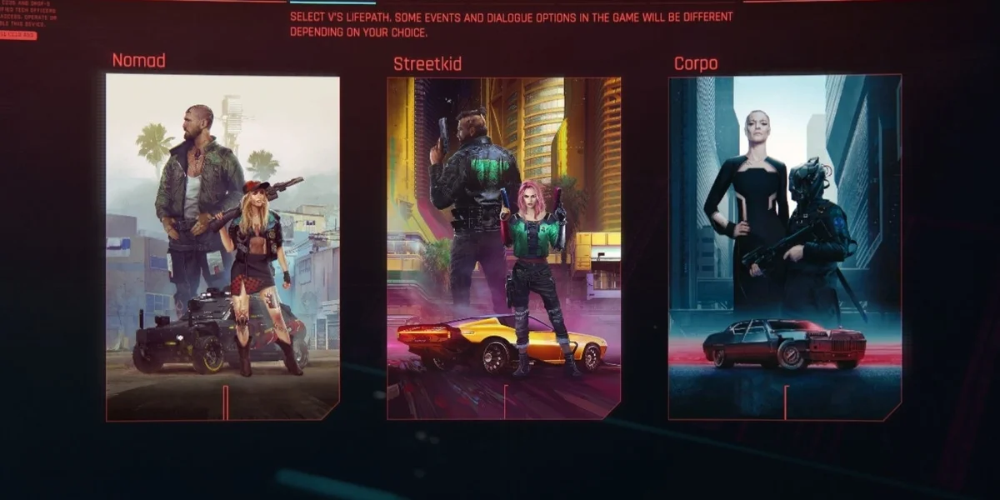
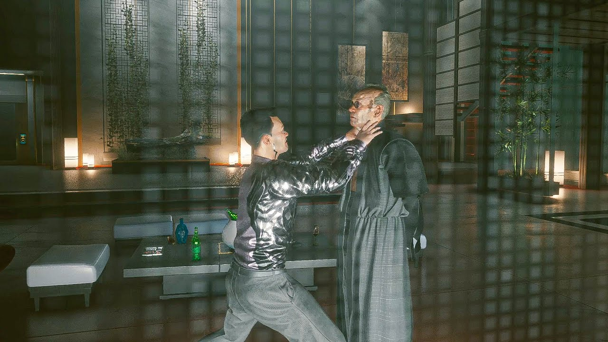
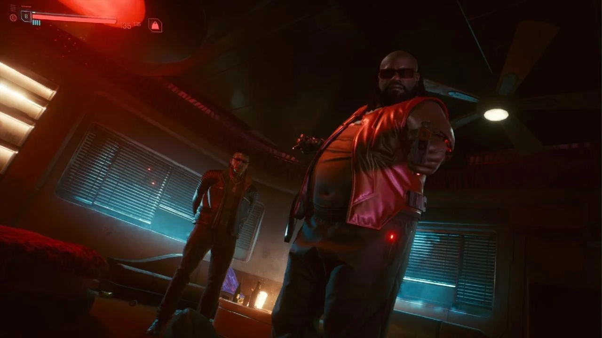

¿Que ocurre?

La historia principal sigue a V, un mercenario en la ciudad futurista de Night City que, dependiendo del camino incial escogido este perdera todo, o ganara todo lo que busca, haciendoce amigo de un matón local Jackie Welles.
Cuando V logra tener cierta reputacion, el fixer local Dexter DeShawn le ofrece un trabajo aparentemente sencillo: robar un chip experimental llamado Relic de la megacorporación Arasaka. Sin embargo, después de adquirir el Relic con la ayuda de Evelyn Parker para localizarlo, el plan sale mal cuando se convierten en testigos inadvertidos del asesinato del líder de la megacorporación, Saburo Arasaka, a manos de su traicionero hijo Yorinobu Arasaka.

Yorinobu encubre el asesinato de su padre diciendo que este había sido envenenado y desencadena una redada de seguridad. Se desata un tiroteo cuando V y Welles escapan, éste resulta fatalmente herido y la funda protectora del Relic está gravemente dañada por lo que V se ve obligado a salvar el Relic insertandolo en su propia cabeza, mientras Welles muere por las heridas que recibió.
V, al atraer a la policía, es traicionado por DeShawn disparandole en la cabeza para dejarlo muerto en un vertedero. Ahí, DeShawn se encuentra con el ex guardaespaldas de Saburo, Goro Takemura, quien este último le obliga a que le entregue el cuerpo de V para poder llevárselo ante Yorinobu. DeShawn no cede y Goro lo mata. Debido a que V tenia el Relic implantado, resucita. Malherido, le pide a Goro ayuda, pero estos son perseguidos por los netrunners de Arasaka Corporation enviados por Yorinobu para asesinarlos, ambos logran liquidarlos. V y Goro van a la clínica del ripperdoc Viktor Vector (amigo de confianza de V) para poder recibir atención médica. V pasa días internado hasta que se recupera.

Dentro del chip está la conciencia digital de Johnny Silverhand, un antiguo rockero y terrorista anti-corporativo. Poco a poco, Johnny empieza a invadir la mente de V, amenazando con reemplazarlo por completo.
A partir de ahí, la historia gira en torno a:
- Buscar una forma de quitar el chip antes de que V muera
- Descubrir la verdad detrás de Arasaka y sus experimentos
- Decidir si confiar o no en Johnny
¿Como se desenvuelve?
Durante el juego, V se relaciona con distintos personajes y facciones, lo que lleva a múltiples decisiones importantes. Estas decisiones afectan el desenlace, ya que el juego tiene varios finales posibles, que van desde intentar salvarse a sí mismo, hasta sacrificarse o unirse a Johnny.
Durante el juego, V se relaciona con distintos personajes y facciones, lo que lleva a múltiples decisiones importantes. Estas decisiones afectan el desenlace, ya que el juego tiene varios finales posibles, que van desde intentar salvarse a sí mismo, hasta sacrificarse o unirse a Johnny.
- Final de Arasaka (“El trato”) - V decide confiar en la corporación Arasaka.
Te someten a un procedimiento para separar tu mente del chip, terminas en una estación espacial, donde te hacen pruebas constantemente, solo tienes dos opciones:
- Firmar un contrato para que tu mente sea almacenada (básicamente pierdes tu humanidad).
- Volver a la Tierra, pero sabiendo que morirás pronto.
- Final con los Aldecaldos y Panam - V ayuda a Panam y los nómadas
Atacan Arasaka contigo, logran darte una oportunidad de sobrevivir y V abandona Night City con ellos en busca de una cura.
Final más “esperanzador”. - Final de Rogue (con Johnny) - V tiene buena relación con Johnny
Johnny toma el control de tu cuerpo temporalmente, junto con Rogue atacan Arasaka y dependiendo de tus decisiones:- V puede quedarse con su cuerpo y convertirse en una leyenda de Night City.
- Johnny se queda con el cuerpo y V muere
- Final secreto (“Don’t Fear the Reaper”) - V tiene una amistad muy buena con Johnny.
V decide atacar Arasaka solo, sin ayuda y si sobrevives:- Obtienes una versión mejorada del final de Rogue.
- Final de suicidio - Tomarte las pastillas
V se quita la vida para evitar empeorar las cosas.
Final más triste y directo.